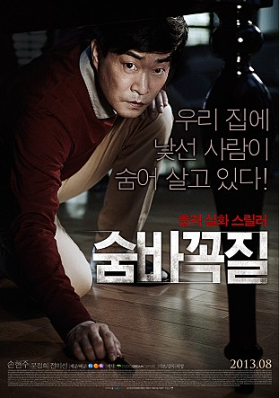

비디오 제작사를 운영하고 있는 아오야마 시게하루(이시바시 료 분)는 7년 전 아내를 잃은 뒤 16살난 외아들 시게히코와 함께 살고 있는 42세의 홀아비이다. 재혼을 권유하는 아들의 말대로 아내감을 찾아보기로 결심하는데, 방법은 엉뚱하게도 오디션! 오디션에 지원한 4천명의 여성 중 아오야마는 신비로운 매력과 순종적인 성격을 지닌 24세의 야마사키 아사미(시이나 에이히 분)와 사랑에 빠진다. 그러나 뒤늦게 아오야마가 아들이 있는 홀아비라는 사실을 알게 된 아사미는 충격을 받고, 낮게 중얼거린다. "거짓말쟁이... 거짓말쟁이는 절대 용서할 수 없어..."
“내 인생이 비극인줄 알았는데, 코미디였어” 고담시의 광대 아서 플렉은 코미디언을 꿈꾸는 남자. 하지만 모두가 미쳐가는 코미디 같은 세상에서 맨 정신으로는 그가 설 자리가 없음을 깨닫게 되는데… 이제껏 본 적 없는 진짜 ‘조커’를 만나라!
우리 집에 나 말고 다른 사람이 살고 있다! 형의 아파트를 뒤로한 채 자신의 안락한 집으로 돌아온 그 날, ‘성수’는 형의 아파트에서 봤던 암호가 자신의 집 초인종 옆에서 새겨진 것을 발견한다. 사라진 형. 숨바꼭질 암호. 서로 다른 두 가족에게 찾아온 충격적 진실. 가족을 지키기 위한 두 가장의 숨가쁜 사투가 시작된다!
